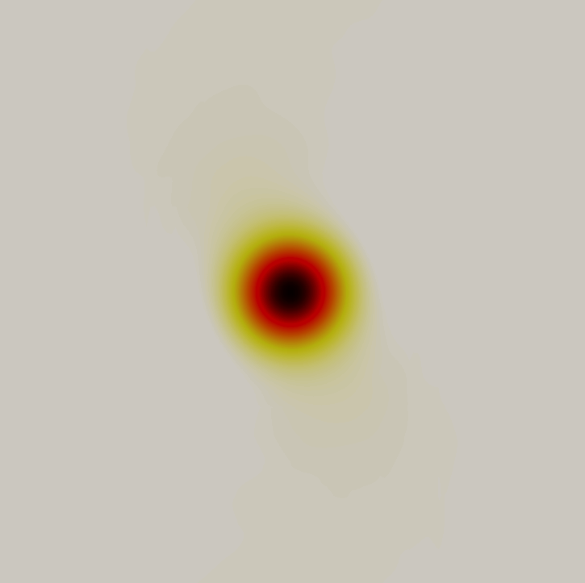
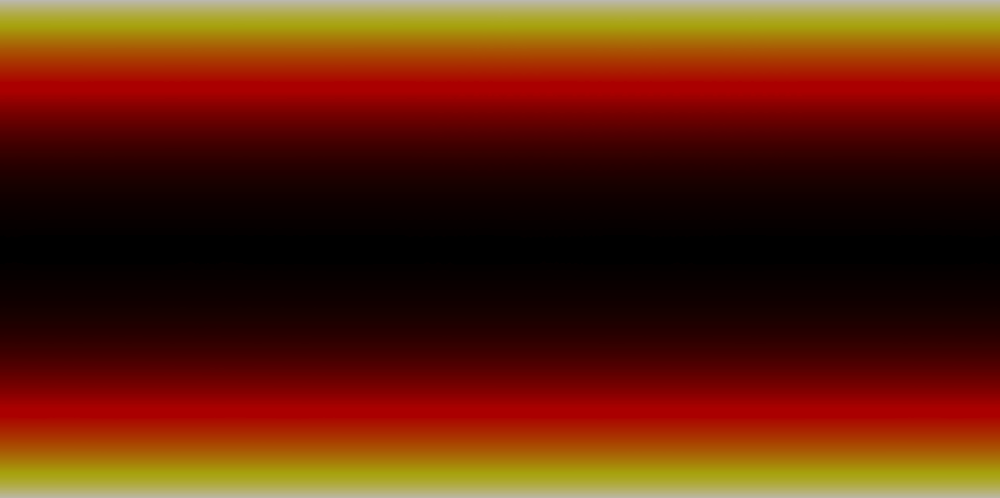
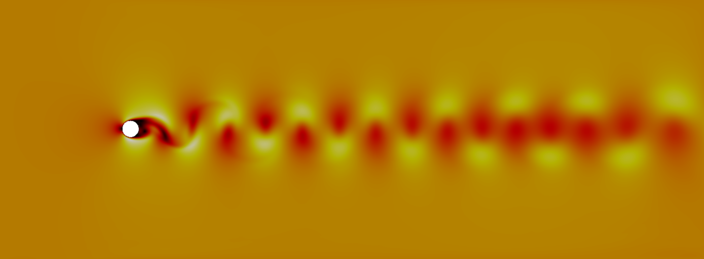
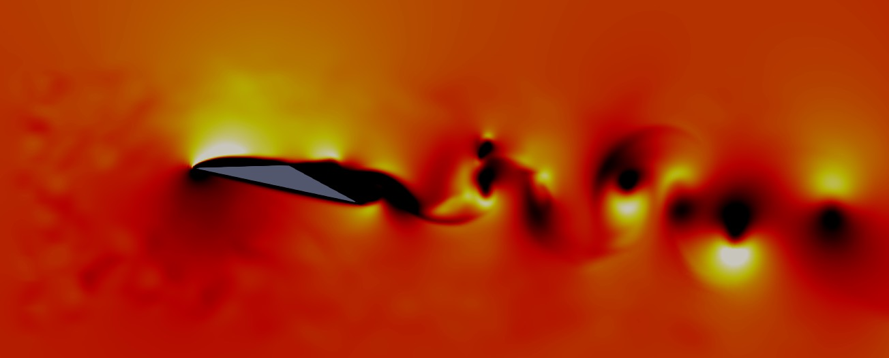
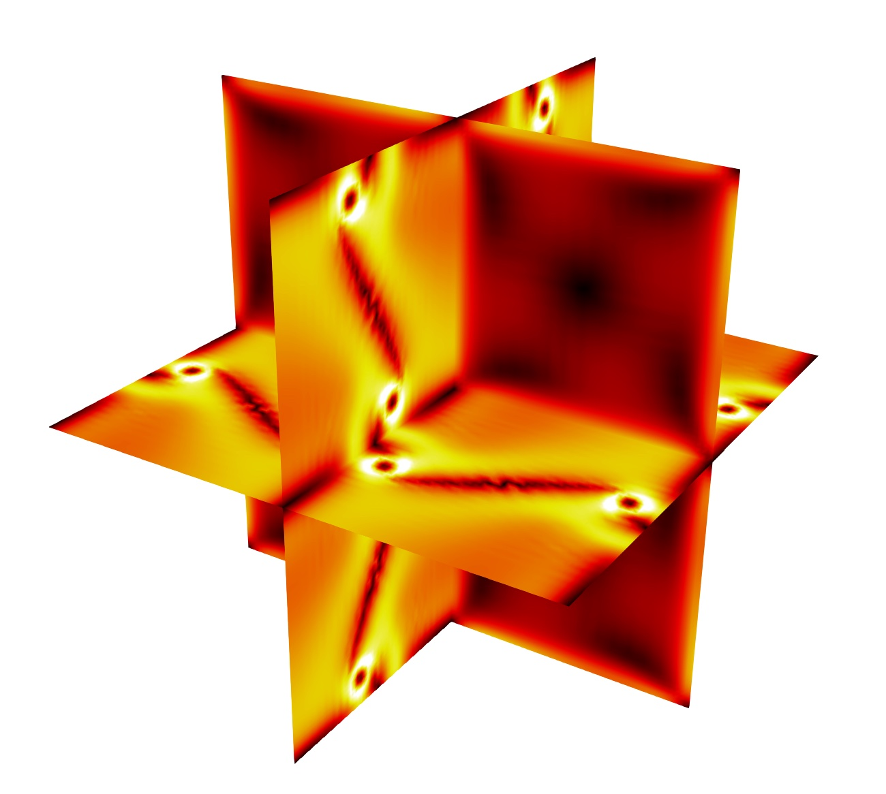

Examples
Test cases are available in the PyFR-Test-Cases repository. It is important
to note, however, that these examples are all relatively small 2D/3D
simulations and, as such, are not suitable for scalability or
performance studies.
Euler Equations
2D Euler Vortex
Proceed with the following steps to run a parallel 2D Euler vortex
simulation on a structured mesh:
Navigate to the PyFR-Test-Cases/2d-euler-vortex
Run pyfr to convert the Gmsh
mesh file into a PyFR mesh file called euler-vortex.pyfrm
Run pyfr to add a partitioning to the mesh:
Run pyfr to solve the Euler equations on the mesh, generating a
series of PyFR solution files called euler-vortex*.pyfrs
Run pyfr on the solution file euler-vortex-100.0.pyfrs euler-vortex-100.0.vtu
Visualise the unstructured VTK file in Paraview

Colour map of density distribution at 100 time units.
2D Double Mach Reflection
Proceed with the following steps to run a serial 2D double Mach reflection
simulation on a structured mesh:
Navigate to the PyFR-Test-Cases/2d-double-mach-reflection
Unzip the Gmsh
mesh file file and run pyfr to covert it into a PyFR mesh file
called double-mach-reflection.pyfrm
Run pyfr to solve the compressible Euler equations on the mesh,
generating a series of PyFR solution files called
double-mach-reflection-*.pyfrs
Run pyfr on the solution file double-mach-reflection-0.20.pyfrs double-mach-reflection-0.20.vtu
Visualise the unstructured VTK file in Paraview
Colour map of density distribution at 0.2 time units.
Navier–Stokes Equations
2D Couette Flow
Proceed with the following steps to run a serial 2D Couette flow
simulation on a mixed unstructured mesh:
Navigate to the PyFR-Test-Cases/2d-couette-flow
Run pyfr to covert the Gmsh
mesh file into a PyFR mesh file called couette-flow.pyfrm
Run pyfr to solve the Navier-Stokes equations on the mesh,
generating a series of PyFR solution files called
couette-flow-*.pyfrs
Run pyfr on the solution file couette-flow-040.pyfrs couette-flow-040.vtu
Visualise the unstructured VTK file in Paraview

Colour map of steady-state density distribution.
2D Incompressible Cylinder Flow
Proceed with the following steps to run a serial 2D incompressible cylinder
flow simulation on a mixed unstructured mesh:
Navigate to the PyFR-Test-Cases/2d-inc-cylinder
Run pyfr to covert the Gmsh
mesh file into a PyFR mesh file called inc-cylinder.pyfrm
Run pyfr to solve the incompressible Navier-Stokes equations on the mesh,
generating a series of PyFR solution files called
inc-cylinder-*.pyfrs
Run pyfr on the solution file inc-cylinder-75.00.pyfrs inc-cylinder-75.00.vtu
Visualise the unstructured VTK file in Paraview

Colour map of velocity magnitude distribution at 75 time units.
2D Viscous Shock Tube
Proceed with the following steps to run a serial 2D viscous shock tube
simulation on a structured mesh:
Navigate to the PyFR-Test-Cases/2d-viscous-shock-tube
Unzip the the Gmsh
mesh file and run pyfr to covert it into a PyFR mesh file
called viscous-shock-tube.pyfrm
Run pyfr to solve the compressible Navier-Stokes equations on the mesh,
generating a series of PyFR solution files called
viscous-shock-tube-*.pyfrs
Run pyfr on the solution file viscous-shock-tube-1.00.pyfrs viscous-shock-tube-1.00.vtu
Visualise the unstructured VTK file in Paraview
Colour map of density distribution at 1 time unit.
3D Triangular Aerofoil
Proceed with the following steps to run a serial 3D triangular aerofoil
simulation with inflow turbulence:
Navigate to the PyFR-Test-Cases/3d-triangular-aerofoil
Unzip the Gmsh
mesh file file and run pyfr to covert it into a PyFR mesh file called
triangular-aerofoil.pyfrm
Run pyfr to solve the Navier-Stokes equations on the mesh,
generating a series of PyFR solution files called
triangular-aerofoil-*.pyfrs
Run pyfr on the solution file triangular-aerofoil-5.00.pyfrs triangular-aerofoil-5.00.vtu
Visualise the unstructured VTK file in Paraview

Colour map of velocity magnitude distribution at 5 time units.
If you have installed Ascent [soln-plugin-ascent]
3D Taylor-Green
Proceed with the following steps to run a serial 3D Taylor-Green simulation:
Navigate to the PyFR-Test-Cases/3d-taylor-green
Unzip the Gmsh
mesh file file and run pyfr to covert it into a PyFR mesh file called
taylor-green.pyfrm
Run pyfr to solve the Navier-Stokes equations on the mesh,
generating a series of PyFR solution files called
taylor-green-*.pyfrs
Run pyfr on the solution file taylor-green-5.00.pyfrs taylor-green-5.00.vtu
Visualise the unstructured VTK file in Paraview

Colour map of velocity magnitude distribution at 5 time units.
If you have installed Ascent [soln-plugin-ascent]
{kind=link}
{kind=link}
{kind=link}
{kind=link}
{kind=link}
{kind=link}
{kind=link}